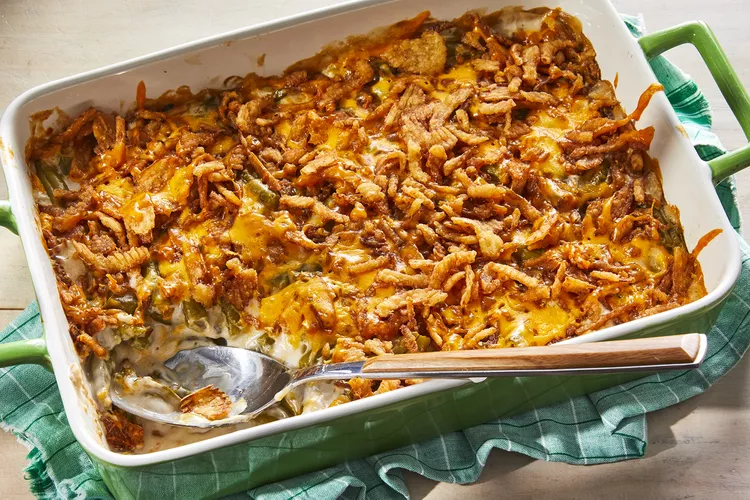

Best Green Bean Casserole

A green bean casserole makes the Thanksgiving holiday complete, and this version can be on the table in no time at all thanks to just four ingredients from your pantry or fridge: canned green beans, condensed mushroom soup, French-fried onions, and shredded Cheddar cheese. Tender green beans and crunchy onions in a creamy, cheesy sauce make this the best green bean casserole you'll ever make.
ingredient
- Green beans: This easy green bean casserole starts with two drained cans of green beans.
- Canned soup: A can of condensed cream of mushroom soup creates a creamy texture and adds savory flavor.
- Cheese: This recipe calls for shredded Cheddar cheese. Use sharp, mild, or a blend of both.
- French-fried onions: The green bean casserole gets its crunch from a French-fried onion topping.
- Optional ingredients: Crumbled bacon, sauteed mushrooms or onions, garlic, Parmesan cheese, black pepper
steps
- Mix the beans and soup in a microwave-safe bowl and microwave until warm.
- Stir in half the cheese. Microwave until melted and well-blended.
- Transfer to a prepared baking dish. Top with fried onions and remaining cheese.
- Bake in the preheated oven until the cheese is melted and the onions are brown.